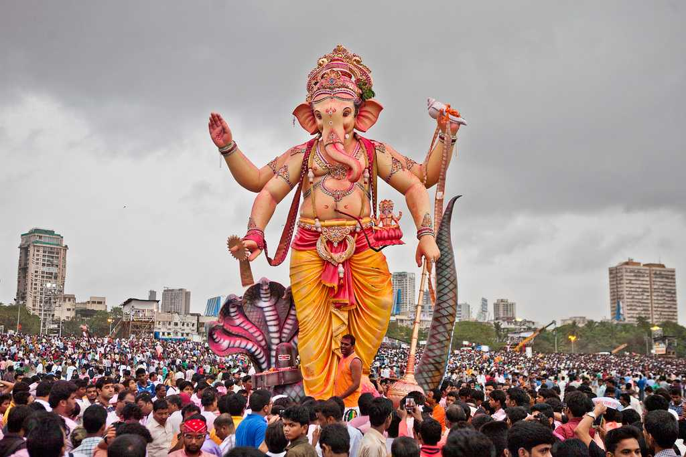
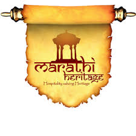

Fairs and Festivals
Some festivals like Nag Panchami, Ganesh Chathurthi, Gokul Ashtami, Makar Sankranti, Gudi Padwa, Bhau Beej,
Ellora Festival Narali Pournima and Shivaji Jayanti have originated in Maharashtra. Nag Panchami is devoted
to the Snake God. The Snake God is prayed to get rid of the 'Nag Dosh'; Ganesh Chathurthi is an eleven-day
long festival of Lord Ganesh. The people of Maharashtra celebrate other festivals also like Diwali,
Christmas, Eid, and New years. In most places, people celebrate all major festivals irrespective of their
religion and honestly, that just shows the unity and brotherhood among them.

Language
The official language of Maharashtra is Marathi. While the majority do speak Marathi, others speak Hindi,
Gujarati, English and other languages. Cities in Maharashtra are Metropolitan and are a blend of many
cultures and use English as their official language. Most of the people in Maharashtra are multilingual and
usually speak both Marathi and Hindi.
